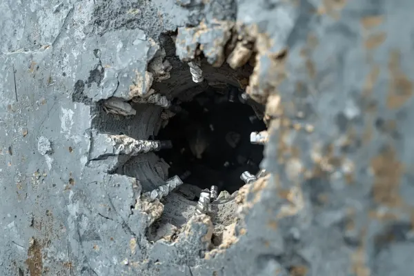

Solusi Beton Alot
Tanpa Merusak Pondasi
Apakah proses pembongkaran aman untuk struktur gedung?
Sangat aman. Tim K3 kami menggunakan teknologi Low Vibration Cutting. Kami mengeksekusi slab dan dinding tebal tanpa memicu getaran perusak, menjamin nol risiko retak pada pondasi pilar utama bangunan di sekitarnya.

Coring Beton Tembus Tulangan
Pembuatan lubang silinder bulat sempurna untuk jalur pipa plumbing & MEP. Mata bor diamond kami sanggup melumat besi tulangan tebal di dalam beton dengan mudah.
Tanya Harga Coring
Slab Cutting (Potong Lantai)
Pemotongan pelat beton industri dan aspal jalan raya menggunakan mesin floor saw bertenaga tinggi. Hasil potongan lurus presisi milimeter untuk modifikasi struktur.
Tanya Biaya Cutting
Core Drill Uji Lab / Aspal
Pengambilan sampel material silinder jalan aspal atau dinding beton untuk keperluan uji laboratorium kuat tekan konstruksi sipil. Pengeboran akurat dan cepat.
Info Core DrillApa Kata Warga Bandung?
"Sangat puas! Tukang datang on time ke Ciparay, alatnya lengkap. Lubang coring untuk pipa ac sangat rapi tanpa retak sekitarnya."
"Pekerjaan bobok pondasi bekas mesin cepat banget kelarnya. Gak ganggu operasional gudang sama sekali. Rekomendasi buat wilayah Bandung!"
"Harganya transparan dari awal lewat WA, eksekusinya rapi. Buat yang cari jasa cutting beton di area Jawa Barat wajib pakai ini."
Panggil Kami Sekarang
Jangan biarkan tukang Anda kebingungan menghadapi beton keras. Serahkan pada kami ahlinya alat berat mini.
Alamat Basecamp:
Gg. KH Ishak Wijaya No.53A, Sukahaji, Kec. Babakan Ciparay, Kota Bandung, Jawa Barat 40211.
Hotline WA: 0813-8131-5821